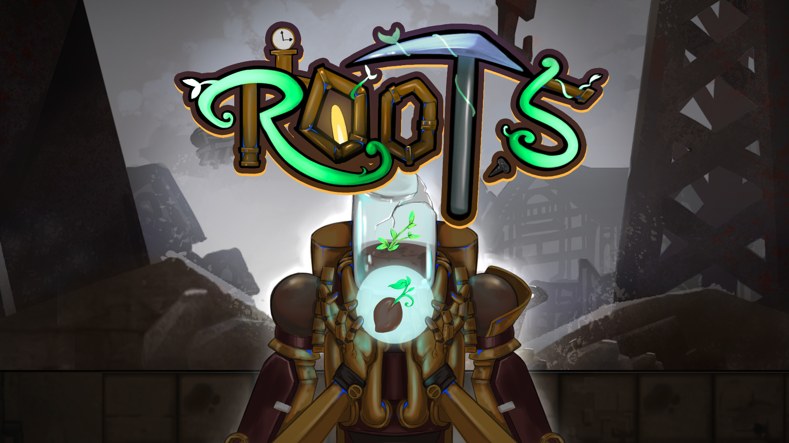

R00T.5 是 Global Game Jam 2023 参赛作品，一款以主题「Roots」为核心打造的蒸汽朋克节奏探索游戏。玩家将操控一台被废弃多年的采矿机器人R00T.5，不再挖掘矿石，转而深入地下寻找深埋地底的生命种子。游戏要求玩家跟随音乐节拍移动，在限时内探索地下区域、激活机械装置、收集全部种子，逐步揭开冰冷钢铁世界下残存的生命痕迹。
🎯 核心体验：节拍同步移动、地下挖掘探索、限时收集闯关、蒸汽朋克暗黑地下氛围。
GLOBAL GAME JAM 2023 / ROOTS
循着节拍，寻找钢铁之下的生命。
蒸汽朋克节奏探索。操控一台废弃的采矿机器人，在限时地下旅程中挖掘、激活机关，收集深埋地底的生命种子。
观看实机 ↘
R00T.5 是 Global Game Jam 2023 参赛作品，一款以主题「Roots」为核心打造的蒸汽朋克节奏探索游戏。玩家将操控一台被废弃多年的采矿机器人R00T.5，不再挖掘矿石，转而深入地下寻找深埋地底的生命种子。游戏要求玩家跟随音乐节拍移动，在限时内探索地下区域、激活机械装置、收集全部种子，逐步揭开冰冷钢铁世界下残存的生命痕迹。
🎯 核心体验：节拍同步移动、地下挖掘探索、限时收集闯关、蒸汽朋克暗黑地下氛围。
宣传片与完整实机流程
主导整体玩法、系统、关卡设计，把控全流程游戏体验，根据试玩持续迭代优化。
独立完成全部Gameplay蓝图开发，实现节拍、移动、交互、UI、流程全套游戏逻辑。
本次Game Jam给定主题为 Roots。初期我确定以地下深挖作为游戏核心视觉与游玩载体，让玩家持续向下探索搜寻隐藏目标；团队讨论后参考《节奏地牢》移动逻辑，融合节拍操作与地下探索，形成独有的节奏挖掘体验。节拍判定窗口经过多轮试玩、参数微调，最终敲定适配大众的操作手感区间。
受限于极短开发周期，项目两次主动删减非核心功能，保障基础玩法完整交付：
切换人工造关后重新规划地下地图动线，针对性引导玩家行为：
小规模试玩验证了前期预判：玩家极易丢失目标、缺少空间引导。随即重新调整种子分布、地图通道结构、机关排布，大幅优化玩家寻路与探索流畅度，形成最终提交版本。
游戏素材与设计草稿
本次72小时Game Jam完整产出可通关可展示游戏原型，积累高强度快速协同开发实战经验。项目周期内独立包揽玩法构思、系统规划、关卡设计与全套Gameplay蓝图开发，依靠持续试玩迭代，在有限时间平衡开发工作量与玩家游玩体验。
项目收获总结：